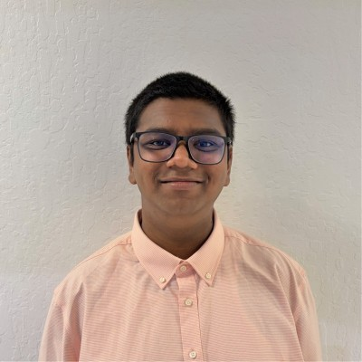

Ashsmith Khayrul
Student at Northeastern University
I'm a first-year Computer Science and Business Administration student with a concentration in Fintech. I'm interested in learning about technological innovations and working to integrate AI responsibly into projects.
Updates
- April 2026: My role as a Research Assistant at Khoury concluded at the end of the spring semester.
- April 2026: I've accepted a Teaching Assistant position for Professor John Rachlin's CS 3200 Databases course this summer!
- March 2026: I visited NVIDIA's campus in Santa Clara and connected with a Northeastern alum! Learn more about the visit via my LinkedIn post.
- March 2026: I've been accepted into CodePath's Technical Interview Prep course!
- February 2026: I officially announced the end of AshBot and that the Discord bot files will be open-sourced.
- January 2026: I started my role as a Research Assistant working for Professor Rasika Bhalerao and Professor Jessica Staddon.
- August 2025: I purchased a 256 GB RAM, 2x Xeon E5-2680 v4 machine to scale Uniplex Host.
Experience
Research Assistant
Supporting a City of Oakland–Northeastern University partnership focused on responsible AI adoption in local government. Contributing to applied research evaluating the effectiveness and risks of Large Language Models (LLMs), primarily Microsoft Copilot, in scaling community support services.
Founder & Systems Engineer
A paid hosting company that primarily offers VPS, Minecraft Servers, and Discord Bot Hosting in the United States. All of our containers/servers are 24/7, boost SLA and provide 99% uptime for all of our services.